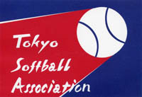

- @itabashi_soft からのツイート
- 
- アクセス数
開設 2010/3/14
新着情報
- 2020年9月9日 令和2年女子都民生涯スポーツ大会 東京ヤンキーズ優勝
- 2020年9月1日 連盟規約を更新しました
- 2019年10月22日 都ソ協主催同男子大会、少女区民大会について
- 2019年9月19日 第72回レディース秋季大会第1日目結果 都ソ協記事転載
- 2019年9月19日 ２０１９年秋季大会・要項・組み合わせ掲載
- 2019年8月22日 ２０１９年区民大会・要項・組み合わせ掲載
- 2019年5月4日 2019年夏季大会・要項日程および関連日程掲載
- 2019年3月22日 2019年春季大会・要項日程および関連日程掲載
- 2019年2月10日 2018年 少女部、区民・秋季大会大会結果報告
- 2018年11月7日 秋季大会結果 男子1部、2部
- 2018年10月11日 区民会結果 男子部、女子部 秋季大会女子部
- 2018年9月8日 東京都生涯スポーツ大会 東京ヤンキーズ優勝
- 2018年8月25日 区民大会要項
- 2018年6月3日 夏季大会結果 男子1部、2部、女子部
- 2018年4月24日 夏季大会要項
- 2018年4月24日 年間日程訂正版
- 2018年4月22日 春季大会結果 男子1部、2部、女子部
- 2018年3月20日 春季大会要項
- 2018年2月25日 春季大会総会、代表者会議:抽選会の実施案内
- 14/4/13 大会情報 春季大会男子Ⅰ部 結果
- 13/10/13 大会情報 秋季大会男子Ⅱ部 結果
- 13/9/29 大会情報 秋季大会男子Ⅰ部 結果
- 13/9/22 大会情報 区民大会男子 準決勝・決勝 結果
- 13/9/20 大会情報 秋季大会日程決定
- 新着情報の一覧
当サイトについて
- 板橋区ソフトボール連盟の公式ホームページです。
連盟運営の大会や登録各チームの情報、行事予定等を掲載します。 - 掲載情報について
当サイトで掲載している試合日程等の内容は、変更となる場合がります。また、それらの変更について必ず反映することを保証するものではありません。チーム関係者は、必ずチームの連絡責任者に確認してください。 - 緊急連絡等について
試合の中止や日程変更等に関する連絡がある場合には、その内容をTwitterでも配信しております。ただし、配信が必ず行われることを保証するものではありません。チーム関係者は、必ずチームの連絡責任者に確認してください。 - サイトに関する問い合わせ
下記の事務局までメールにてお願いします。
連盟へのご連絡・ご相談
WEBからのご連絡はメールにてお願いいたします。